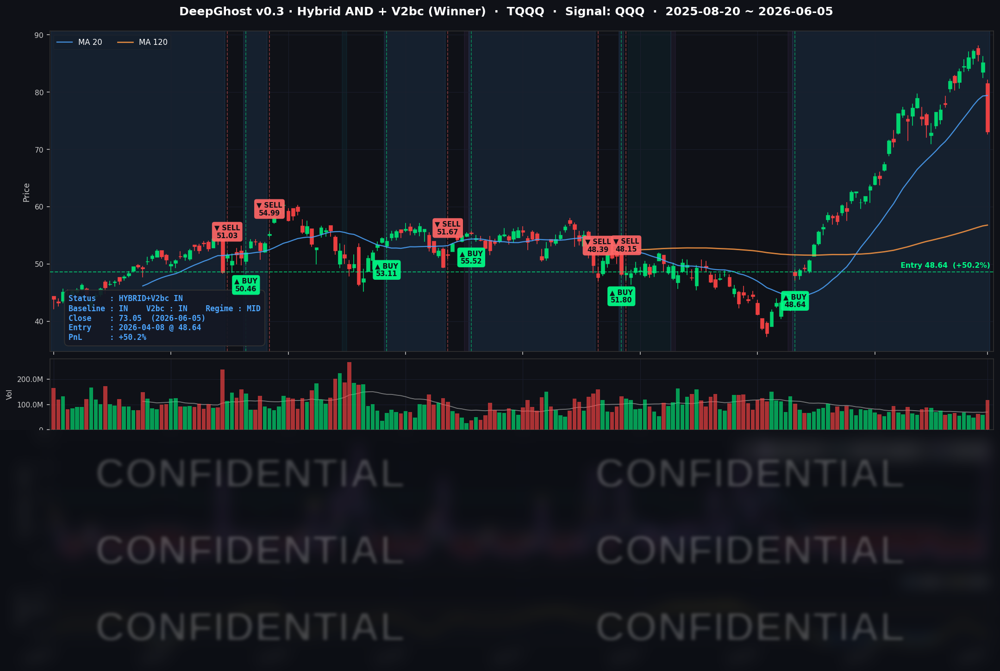

한 줄 요약: 나스닥이 올해 최악의 하루(−4.80%)를 겪고 반도체가 −10%대로 무너지는 와중에, 모델은 4월 초부터 끌고 온 베타 포지션을 익절 청산하기로 했고 폭락 종목은 단 하나도 추격매수하지 않았다.
📊 오늘의 매매 신호
케이스 C — 청산 (IN → OUT)
| 항목 | 내용 |
|---|---|
| 오늘 할 일 | 🔴 TQQQ 전량 매도 — 오늘 저녁 미국 장 개장 후 (한국시간 오후 10:30~) |
| 포지션 상태 | 청산 신호 발생 |
| 보유 기간 | 2026-04-08 ~ 2026-06-05 (58일) |
| 이번 거래 수익 | +50.2% (6/5 종가 기준 미실현, 실제 손익은 매도 체결 시 확정) |
참고: 같은 날 QQQ(+15.8%)·SPY(+12.3%) 베타 포지션도 함께 청산 신호가 나왔습니다. AAPL은 보유를 유지합니다. 신규 매수 종목은 없습니다.
TQQQ 시그널 — OUT OF POSITION (청산 대기)
현재 상태: 매수 포지션 청산 진행 중 | 이번 거래 수익 +50.2% (미실현)

4월 초 바닥에서 진입해 58일을 버틴 3배 레버리지 포지션이 큰 이익 구간에서 청산 신호로 돌아섰습니다. 흥미로운 점은 청산 신호가 나온 날이 바로 "올해 최악의 폭락일"이었다는 것입니다. 모델은 시장이 무너지는 그 순간에 패닉 투매가 아니라 "충분히 먹었으니 이제 비운다"는 익절 모드로 전환했습니다.
여기서 강조할 부분은, 표시된 수익률은 6/5 종가 기준 미실현 수치라는 점입니다. 실제 매도는 다음 거래일 개장 시가에 체결되므로, 주말 동안의 뉴스·선물 흐름에 따라 체결가가 종가와 달라질 수 있습니다.
오늘 미국 시장 — 시황 요약
오늘 시장을 한 마디로 요약하면 "좋은 뉴스가 나쁜 뉴스가 된 날"입니다. 5월 고용지표가 예상의 두 배로 강하게 나오자, 역설적으로 시장은 무너졌습니다. 강한 경제 = 금리 인하 기대 소멸 = 고밸류 성장주에 역풍, 이라는 공식이 작동한 것입니다.
지수 마감
| 지수 | 종가 | 등락률 |
|---|---|---|
| S&P 500 | 7,383.74 | −2.64% |
| Nasdaq Composite | 25,709.43 | −4.18% |
| Dow Jones | 50,866.78 | −1.35% |
| Russell 2000 | 2,833.50 | −3.47% |
방어·가치주 중심의 다우(−1.35%)와 기술·반도체 집중의 나스닥(−4.18%) 사이에 3.5%포인트 이상 격차가 벌어졌습니다. 같은 하락장이어도 "어떤 자산을 들고 있었느냐"가 결과를 완전히 갈랐습니다.
국채 금리 & 연준
| 만기 | 수익률 | 전일 대비 |
|---|---|---|
| 3개월 | 3.625% | +0.5bp |
| 5년 | 4.280% | +9.2bp |
| 10년 | 4.536% | +5.9bp |
| 30년 | 4.999% | +2.1bp |
이번 하락의 진짜 주인공은 금리입니다. 5월 고용이 예상보다 훨씬 강하게(+172K, 컨센서스 약 80K의 두 배) 나오면서, 연내 금리 인하 기대가 사실상 사라지고 오히려 인상 가능성까지 다시 거론되기 시작했습니다. 그 결과 5년물 금리가 가장 크게 뛰었습니다(+9.2bp). 이는 "경기 침체 걱정"이 아니라 "연준이 더 오래 긴축을 유지할 것"이라는 매파적 재가격화입니다. 무위험 금리가 오르면 먼 미래의 현금흐름을 보고 사는 고밸류 성장주(반도체·AI)의 가치가 직접 눌립니다. 6월 FOMC(6/16~17)는 동결이 기정사실로 받아들여지고 있습니다.
오늘의 핵심 이슈
- 강한 5월 고용 → 금리 인하 기대 소거. 예상의 두 배인 +172K. 실업률은 4.3%로 유지. 전형적인 "좋은 경제 지표가 주식엔 악재"가 된 사례로, 10년물 금리가 4.54%까지 급등했습니다.
- 브로드컴(AVGO) AI 가이던스 실망이 반도체 매도의 방아쇠. 직전 실적 자체는 좋았지만, 다음 분기 AI 전망이 가장 공격적인 기대치에 못 미치자 매도가 촉발됐습니다. AVGO 본주 −7.92%.
- 반도체·메모리 전반의 붕괴. 과열됐던 포지션이 한꺼번에 풀리며 마이크론 −13.25%, 인텔 −11.28%, 퀄컴 −10.98% 등 두 자릿수 급락이 속출했습니다.
매크로 & 원자재
- 유가: WTI $90.54 (−2.69%), Brent $93.09 (−2.04%)
- 금: $4,337.10 (−3.10%)
- VIX(변동성 지수): 21.51 (전일 15.40 대비 +39.7% 급등)
- 공포탐욕지수: 42 (Fear) — 하루 만에 "탐욕"에서 "공포"로 전환
주식뿐 아니라 통상 안전자산인 금까지 함께 −3.10% 빠졌다는 점이 인상적입니다. 이는 단순한 섹터 조정이 아니라, 현금 확보를 위한 "일단 다 판다" 식의 광범위한 디레버리징이 있었음을 시사합니다.
주요 종목 동향
| 종목 | 종가 | 등락률 | 비고 |
|---|---|---|---|
| MU | 864.01 | −13.25% | 메모리. 섹터 최대 낙폭 |
| INTC | 99.17 | −11.28% | 100달러선 붕괴 |
| QCOM | 215.94 | −10.98% | 포지셔닝 되돌림 |
| AVGO | 385.73 | −7.92% | 트리거 종목. AI 가이던스 기대 미달 |
| TSLA | 391.00 | −6.56% | 고베타. 400달러선 이탈 |
| NVDA | 205.10 | −6.20% | AI 대장주. 섹터 동반 하락 |
| META | 593.00 | −5.51% | 600달러선 붕괴 |
| AMZN | 246.03 | −3.06% | 빅테크 평균 수준 하락 |
| MSFT | 416.67 | −2.66% | 상대적 선방 |
| AAPL | 307.34 | −1.25% | 디펜시브 빅테크. 방어 |
| GOOGL | 368.53 | −0.98% | 커버리지 중 두 번째 선방 |
| NFLX | 82.18 | +0.76% | 유일한 상승 |
낙폭 순서가 곧 밸류에이션·금리 민감도 순서와 거의 일치합니다. AI·금리 노출이 클수록 더 깊게 빠졌고, 구독 모델의 넷플릭스가 유일하게 상승한 것이 이를 잘 보여줍니다.
Ghost.AI — Quantitative AI Investment
Model: DeepGhost v0.3 | Transformer-Based Deep Learning
Coverage: 13 tickers | Updated every trading day after US market close
⚠️ 본 자료는 정보 제공 목적으로만 작성되었으며 투자 권유가 아닙니다. 모든 투자의 책임은 투자자 본인에게 있습니다. 과거 성과가 미래 수익을 보장하지 않습니다.
[유의사항]
고스트에이아이 주식회사는 「자본시장과 금융투자업에 관한 법률」 제101조에 따른 유사투자자문업자로 등록된 사업자입니다.
- 본 서비스는 불특정 다수를 대상으로 발행되는 단방향 정보 제공 서비스이며, 투자자 개인의 재산 상황·투자 목적·위험 선호도를 반영한 개별 투자 조언이 아닙니다.
- 고스트에이아이 주식회사는 고객과 쌍방향 의사소통(개별 상담, 맞춤형 자문 등)을 제공하지 않습니다.
- 본 콘텐츠는 투자 권유 또는 매매 주문의 청약·청약의 권유에 해당하지 않으며, 최종 투자 판단 및 그에 따른 손익의 책임은 전적으로 투자자 본인에게 있습니다.
고스트에이아이 주식회사 | 유사투자자문업 등록번호: 제2025-000호